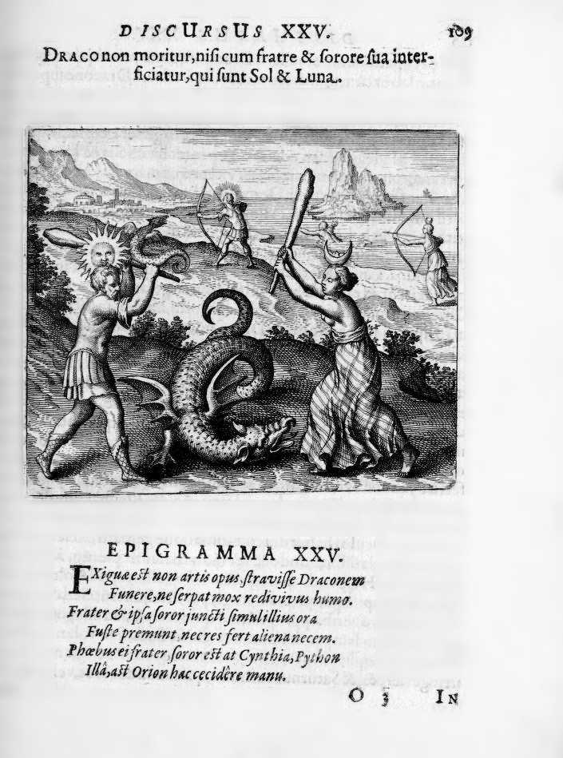

A dragon writhes at center, locked in combat with two figures — a male and female identified as Sol and Luna, or brother and sister. The dragon is wounded or dying but still dangerous. The male figure wields a weapon while the female restrains or applies a substance to the dragon's body. The scene takes place in a rocky, barren landscape suggesting the underground or subterranean.
The Dragon does not die, if it is not killed by its brother and sister, that is to say by Sol and Luna.
Maier argues that the philosophical dragon — the unreformed prima materia — cannot be killed by any single agent but only by the combined action of its own brother and sister, Sol and Luna (gold and silver, sulphur and mercury). He develops the myth of the Golden Fleece, where the dragon guarding the treasure must be slain before the fleece can be obtained, as an allegory for the alchemical work. The discourse cites Jason's quest and connects it to the Hermetic tradition that the Stone is guarded by a dragon that can only be overcome by substances of its own kind. Maier emphasizes that both the masculine (active, fiery) and feminine (passive, moist) principles must cooperate in this killing.
Emblem XXV bears the motto: "The Dragon does not die, if it is not killed by its brother and sister, that is to say by Sol and Luna."
Maier argues that the philosophical dragon — the unreformed prima materia — cannot be killed by any single agent but only by the combined action of its own brother and sister, Sol and Luna (gold and silver, sulphur and mercury). He develops the myth of the Golden Fleece, where the dragon guarding the treasure must be slain before the fleece can be obtained, as an allegory for the alchemical work. The discourse cites Jason's quest and connects it to the Hermetic tradition that the Stone is guarded by a dragon that can only be overcome by substances of its own kind.
De Jong's source-critical analysis identifies the textual traditions Maier draws upon for this emblem.
The discourse draws on biblical sources: Solomonic / Biblical Wisdom Tradition (Proverbs).
J.B. Craven: Craven summarizes Emblem 25: the dragon that does not die unless killed by his brother (Apollo/Sun) and sister (Diana/Moon), the only means of its destruction.
H.M.E. de Jong: Source: Rosrzrimn Philosopkormu, in:Art. Am'if., II, 258or302: “Dracononmoriturnisi cum fratreetsorore sua, id est 1') Sole et Luna .... I94 | In thepicturein theforeground, wesee Sol and Luna, who, withabludgeon, attack the winged Dragon, or thevolatile Mercury. Hehastolose his volatility, his mobilityandchangeableness and tobecoagulated into St one.
Figure: Jason (Iason)
Concept: Mytho-Alchemy (Mytho-Alchemia)
Craven summarizes Emblem 25: the dragon that does not die unless killed by his brother (Apollo/Sun) and sister (Diana/Moon), the only means of its destruction.
Citation: p. 90-91
Source: Rosrzrimn Philosopkormu, in:Art. Am'if., II, 258or302: “Dracononmoriturnisi cum fratreetsorore sua, id est 1') Sole et Luna .... I94 | In thepicturein theforeground, wesee Sol and Luna, who, withabludgeon, attack the winged Dragon, or thevolatile Mercury. Hehastolose his volatility, his mobilityandchangeableness and tobecoagulated into St one. In themiddleof thedesign the strugglebetween Sol and Lunaagainst the winged Dragon isagain pictured; now, however, S01and Lunaarearmedwithbow andarrow; perhaps t his refersto the fire that has to beconquered, if, any how, the words from Maier’s Symbols Azmzae Mensue areapplicable here:“The fire mentioned hereiscalled the Python bypoets, becauseit is the fireof theputrefactio whichiskilledby thearrows of thephilosophical Apollo; bymetathesis t...